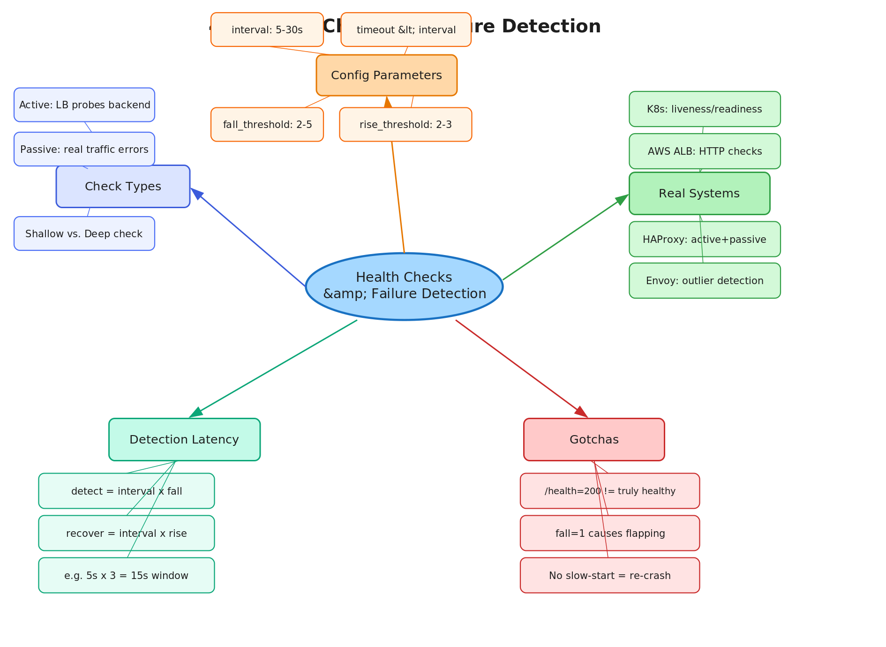

4.3 Health Checks & Failure Detection
Active · Passive · Thresholds · Detection Latency
01 Goal of This Subtopic
- Be able to distinguish passive vs. active health checks and explain when each is appropriate without prompting.
- Explain why a single failed check should not immediately remove a backend (threshold-based eviction) and the cost of not doing so.
- Design a complete health check setup — check type, interval, timeout, rise/fall thresholds — for a given production scenario.
- Calculate failure detection latency for a given config and explain the user-impact window.
02 What Mastery Looks Like
- Can distinguish passive vs. active health checks and explain when each is appropriate without prompting.
- Can explain why a single failed check should not immediately remove a backend and what threshold-based eviction prevents.
- Can design a complete health check setup — check type, interval, timeout, rise/fall thresholds — for a given production scenario.
- Can identify failure detection latency for a given config and explain the user-impact window.
- Can explain the difference between a shallow ping check and a deep synthetic check, and why each is used.
03 Study Phases to Achieve Mastery
Goal: Read deeply enough that you could explain the concept without the doc.
- DDIA Chapter 8 — "Trouble with Distributed Systems" (Kleppmann) — why detecting failures in async networks is fundamentally hard
- AWS ELB Health Check Docs — docs.aws.amazon.com/elasticloadbalancing/latest/application/target-group-health-checks.html — concrete production defaults
- HAProxy Health Check Documentation — haproxy.com/documentation — covers passive, active, and agent checks with real config examples
- Kubernetes Probes Documentation — kubernetes.io/docs/tasks/configure-pod-container/configure-liveness-readiness-startup-probes/ — liveness vs. readiness vs. startup explained
- Read Sections 5–9 (Core Definition to How It Works) carefully — don't skim
- Re-read the Cheatsheet (Section 4) and try to recite it from memory after
Goal: Reproduce the knowledge in your own words without looking.
- Close the doc — write out the Core Definition from memory, then compare
- Explain First Principles out loud — what was broken before health checks existed?
- Reconstruct the active check cycle step by step from memory (probe → counter → threshold → evict → probe again → restore)
- Restate each Trade-off row in your own words — if you can't explain the cost, you don't own it yet
Goal: Connect to real systems and simulate interview scenarios.
- Verify each Real-World Example independently and add anything missed to My Notes
- Practice Interview Application out loud — trigger phrases + trade-off statement verbatim
- Work through Common Misconceptions — explain WHY each is wrong, not just that it is
- Trace Relationships to Other Concepts without looking
Goal: Confirm you actually own it, not just recognize it.
- Answer every Self-Check Quiz question out loud without notes
- Recite the Cheatsheet from memory — if you can't, re-do Phase 2
- Tick off Mastery items — only if you can demonstrate on demand, not just if it sounds familiar
- Teach this concept for 2 minutes to an imaginary interviewer without hesitation or notes
04 Cheatsheet

05 Core Definition
06 Core Concepts
/health is healthy but /checkout is broken) won't be caught.GET /ping → 200) only verifies the process is listening. A deep check (GET /health that queries the DB and cache internally) validates the full dependency chain. Deep checks catch "zombie" backends that are up but unusable. Risk: deep checks can cascade failures if they hammer a degraded downstream service.interval × fall_threshold. During this window, real users hit the failing backend and see errors. Reducing interval shortens user impact but increases probe overhead across the fleet. This is the core tuning trade-off.07 First Principles — Why Does This Exist?
In a distributed system, backends fail silently. A process can crash, a VM can run out of memory, a network partition can isolate a node, or a downstream database can become unavailable — all without the load balancer knowing. Without health checks, the LB continues routing traffic to the failed backend and users see a stream of errors or timeouts.
The fundamental problem is that networks are asynchronous and nodes fail independently. No component can rely on being told when another component has failed — it must detect failure on its own. This is the core challenge of distributed systems described in DDIA Chapter 8: you cannot distinguish a slow node from a dead one without a timeout, and timeouts are always a guess.
Health checks solve this by turning a passive assumption ("if I haven't heard otherwise, it must be healthy") into an active, continuous verification ("I will keep probing, and I will act on what I observe"). The rise/fall threshold mechanism is the engineering answer to the noise inherent in network communications — not every missed probe means death, but a pattern of misses almost certainly does.
08 Mental Models
Model 1: The Canary in the Coal Mine
Active health checks are like sending a canary into a mine every 5 seconds. If the canary doesn't come back within 2 seconds (timeout), you count that as a failure. After 3 dead canaries in a row (fall threshold), you stop sending miners (real traffic) into that shaft. Where it breaks down: the canary only takes one path through the mine. If the main tunnel is fine but a side shaft is blocked (a specific endpoint is broken), the canary misses it — this is exactly the shallow vs. deep check distinction.
Model 2: The Probation Officer
The rise threshold is a probation mechanism. A backend that just recovered isn't immediately trusted — it must demonstrate two consecutive clean check-ins before being restored to full duty. This prevents a backend that is thrashing (crashing and restarting in a loop) from being flipped back into production on the first successful restart only to crash again under load. Where it breaks down: rise threshold alone doesn't prevent a sudden traffic spike from overwhelming a cold backend — slow-start is the complementary protection.
Model 3: Detection Latency as a Tuning Dial
Think of health check config as a dial between "fast detection" and "stability." Shorter intervals and lower thresholds mean faster failure detection but more risk of false evictions on transient blips. Longer intervals and higher thresholds mean more stability but longer windows of user-visible errors. The right position on this dial is determined by your SLO error budget: how many bad requests can your 99.9% availability target absorb before you breach it? That directly implies the maximum tolerable detection latency window.
09 How It Works — Mechanics
Normal Path — Active Check Cycle
- 1The LB maintains a backend pool (e.g., 5 upstream servers). Each backend has a health state: healthy, unhealthy, or draining.
- 2Every
intervalseconds (e.g., 5s), the LB sends a probe to each backend — TCP SYN to port 80, or HTTP GET to/health. - 3If the probe receives a valid response within
timeout(e.g., 2s), the backend's consecutive failure counter resets to 0. - 4If the probe fails (no response, connection refused, or wrong status code), the failure counter increments.
- 5When the failure counter reaches
fall_threshold(e.g., 3), the backend is marked unhealthy and removed from the active pool — new connections no longer route to it. - 6Probing continues on the unhealthy backend. When it passes
rise_threshold(e.g., 2) consecutive checks, it is re-added to the pool (optionally with slow-start ramp-up).
Passive Check Mechanics (Parallel Path)
Simultaneously, the LB watches real request responses. When a backend returns 5xx responses or connections time out at a configurable error rate, it is evicted without waiting for the next active probe cycle. This dramatically reduces detection latency for application-level failures in high-traffic systems.
Failure Edge Cases
Key Parameters to Specify in an Interview
| Parameter | Typical Range | Effect of Tuning |
|---|---|---|
interval | 5–30s | Shorter → faster detection, more probe overhead |
timeout | 1–5s (must be < interval) | Shorter → faster failure confirmation per probe |
fall_threshold | 2–5 | Lower → faster eviction, more false positives |
rise_threshold | 2–3 | Lower → faster recovery, risk of premature reinstatement |
10 Real-World System Examples
| System | How This Concept Applies | Notes |
|---|---|---|
| AWS ALB / NLB | Active HTTP/HTTPS/TCP checks with configurable interval (5–300s), timeout, healthy/unhealthy threshold. ALB checks /health by default; NLB uses TCP checks. |
ALB health checks are per-target-group — different groups can have different check configs for different workloads |
| HAProxy | Active checks (HTTP/TCP) and passive checks (observing real traffic errors). Uses rise and fall params. Also supports "agent checks" — a lightweight TCP channel the backend uses to proactively signal its own load/state. |
Agent checks allow a backend to voluntarily remove itself before a hard failure — e.g., when queue depth exceeds a threshold |
| NGINX Plus | Active upstream health checks via the health_check directive. NGINX open-source does passive checks only (on real traffic). |
Active checks are a paid NGINX Plus feature — a common gotcha when designing with the assumption that nginx does active checks by default |
| Kubernetes (kubelet) | Liveness probes (restart pod if failed), readiness probes (remove from Service endpoints if failed), startup probes (give slow-starting apps extra time). Three check types: HTTP, TCP, exec. | Readiness probe is the direct health-check equivalent for LB integration — a pod failing its readiness probe is removed from the Service's endpoint slice |
| Envoy (service mesh) | Outlier detection — passive eviction when backends exceed error rate or consecutive 5xx thresholds. Also supports active health checks via the health_check filter. | Envoy's outlier detection has an ejection percentage cap to avoid removing all backends simultaneously during a cascade |
11 Trade-offs
| Benefit | Cost / Limitation |
|---|---|
| Fast failure detection removes unhealthy backends before users are widely impacted | Detection latency window (interval × fall_threshold) means some users will hit the failing backend during the detection period |
| Threshold-based eviction prevents flapping from transient network blips | Higher thresholds increase detection latency — there is no free lunch between speed and stability |
| Passive checks catch real application errors (5xx on actual requests) that active pings miss | Passive checks require traffic volume to fire — useless in low-QPS systems or for backends with sparse traffic |
| Deep health checks validate the full dependency chain (DB, cache, downstream APIs) | Deep checks add load to already-stressed dependencies and can trigger cascading failures during degraded states |
| Rise threshold prevents premature reinstatement of recovering backends | Rise threshold delays recovery — the backend is healthy but sitting idle while it accumulates check passes |
12 Interview Application
Trigger Phrases
- "How does the load balancer know when a server goes down?"
- "What happens if one of your backend servers crashes?"
- "How do you ensure high availability in your design?"
- "Walk me through failover in your system."
What You Say
/health every 5 seconds with a 2-second timeout, evicting after 3 consecutive failures and restoring after 2 consecutive passes. This gives a 15-second worst-case detection window, which I'd pair with passive checks to catch application-level errors faster in high-traffic paths." This signals you understand operational realities, not just the happy path.
Trade-off Statement (memorize this)
13 Common Misconceptions & Gotchas
14 Relationships to Other Concepts
| Relationship | Concept | Why |
|---|---|---|
| Builds on | 4.1 L4 vs. L7 Load Balancers | Check type (TCP vs. HTTP) is tied directly to which layer the LB operates at. L4 LBs can only do TCP checks; L7 LBs can inspect HTTP response codes and bodies, enabling meaningful deep checks. |
| Enables | 4.4 Failover and Redundancy | Health checks are the detection mechanism that triggers failover. Without reliable failure detection, automatic failover is impossible — you can't fail over to a healthy node if you don't know which nodes are healthy. |
| Tension with | 4.6 Sticky Sessions | Sticky sessions tie a user to a specific backend. When health checks evict that backend, the session must be broken or migrated, creating a direct conflict between session affinity and health-based pool management. |